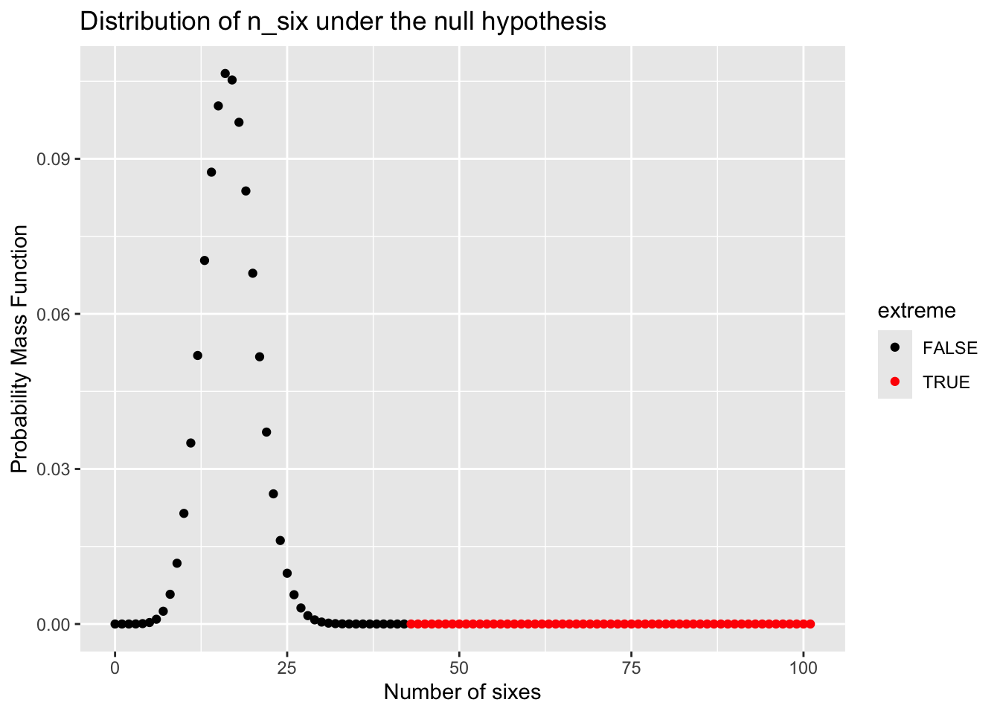
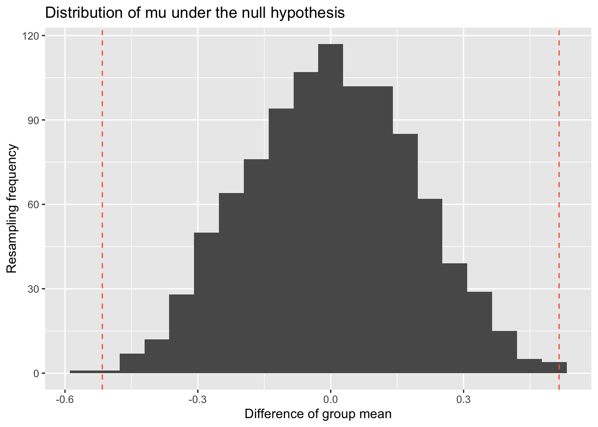
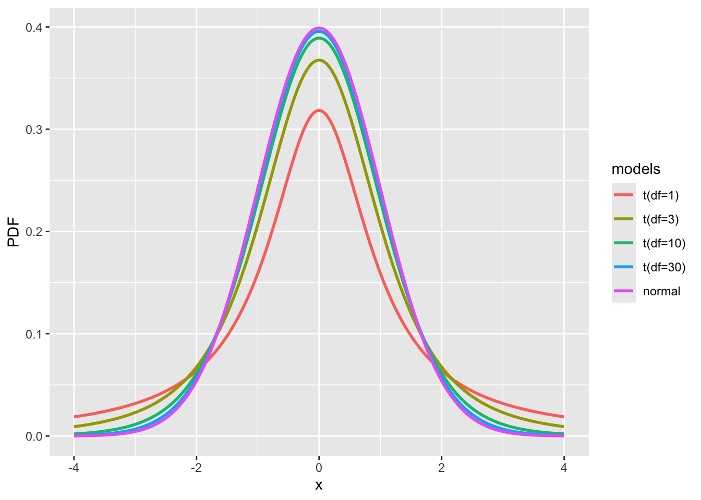
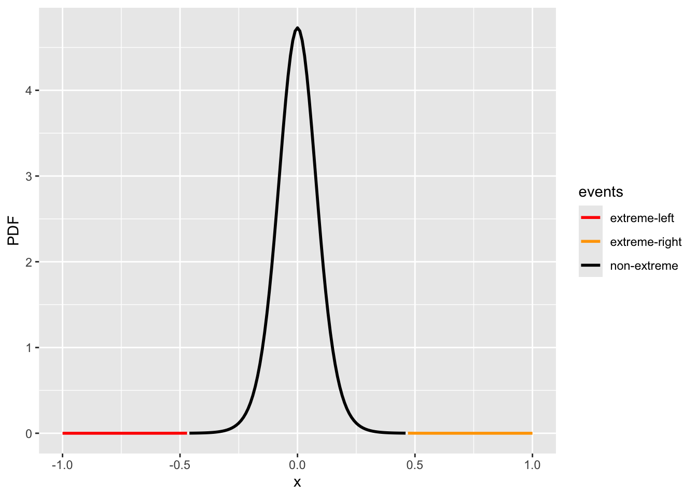
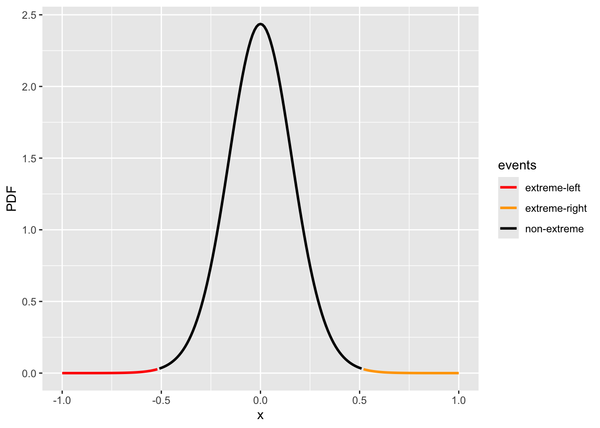
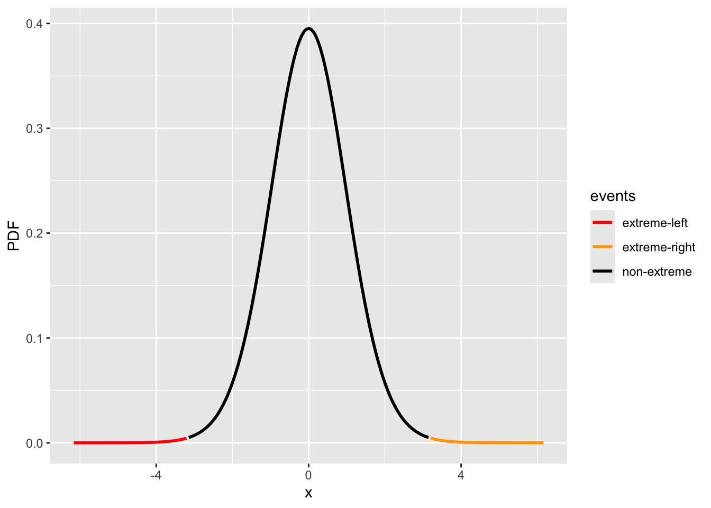
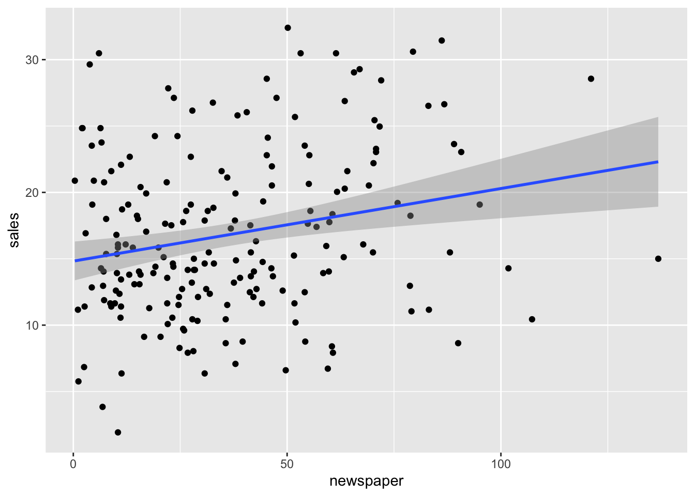
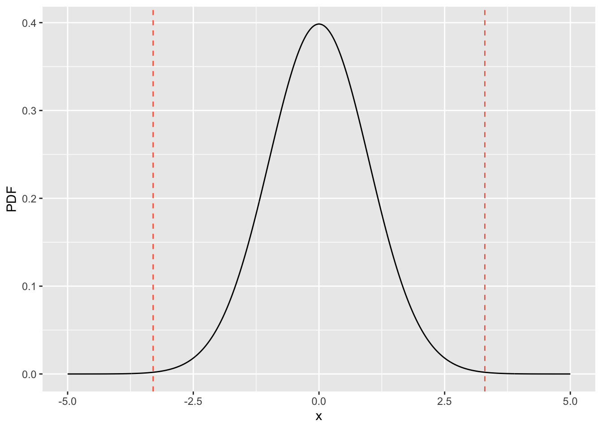

Chapter 2 Introduction to Hypothesis test
2.1 Hypothesis test and p-value
Hypothesis test is a method for statistical inference, specifically to determine whether the collected data provide sufficient evidence to reject a particular hypothesis.
2.1.1 Extreme events and random chance
Example 1: In 1930s, Sir Ronald Fisher did a famous experiment, “The Lady Tasting Tea”, which aimed to determine whether Lady Bristol could reliably distinguish whether milk or tea was added first when making English milk tea. In the experiment, eight cups—four with milk added first and four with tea added first—were shuffled before being presented to the lady. She correctly identified the order in all eight cups. This raises the question: does the lady genuinely have the ability to distinguish whether milk or tea was added first? In hypothesis testing, we can consider two hypotheses:
* \(H_0\): The lady has no ability to distinguish between milk-first and tea-first; her correct identifications are due to chance.
* \(H_A\): The lady has some ability to distinguish; her correct identifications are better than what would be expected by chance.
Table 1. Contingency table for the lady tasting tea experiment.
| Predicted tea first | Predicted milk first | Total | |
|---|---|---|---|
| Tea first | a = 4 | b = 0 | a + b = 4 |
| Milk first | c = 0 | d = 4 | c + d = 4 |
| Total | a +c = 4 | b + d = 4 | n = a + b + c + d = 8 |
Let’s consider a different perspective. How likely is it for this to happen purely by chance?
Using our mathematical skills (or choose() function in R), we find that there are 70 possible combinations. Out of these, only one combination results in an outcome as extreme as the lady’s identification. Therefore, if the results were purely random, the probability of observing a completely correct identification is 1 out of 70, or approximately 0.014.
In another word, the chance we are fooled by randomness is 1/70 = 0.014.
How to calculate the number of combinations with R and math:
R
Math Consider permutations where the first choice is 8, the second is 7, and so on. However, we must also account for the permutations within the selected cups—that is, the arrangements among the chosen 4 cups. Therefore, the number of combinations can be calculated as follows.
\[\frac{8 \times 7 \times 6 \times 5} {4 \times 3 \times 2 \times 1} = 70\]Example 2: Your arch-nemesis, Blofeld, always seems to win at Ludo, leading you to suspect that he might be using a loaded die. You have observed the following outcomes from 100 rolls of his die:
Based on these observations, you want to evaluate two hypotheses:
* \(H_0\): probability of rolling a 6 is p = 1/6
* \(H_A\): probability of rolling a 6 is p > 1/6
data = c(6, 1, 5, 6, 2, 6, 4, 3, 4, 6, 1, 2, 5, 6, 6, 3, 6, 2, 6, 4, 6, 2,
5, 4, 2, 3, 3, 6, 6, 1, 2, 5, 6, 4, 6, 2, 1, 3, 6, 5, 4, 5, 6, 3,
6, 6, 1, 4, 6, 6, 6, 6, 6, 2, 3, 1, 6, 4, 3, 6, 2, 4, 6, 6, 6, 5,
6, 2, 1, 6, 6, 4, 3, 6, 5, 6, 6, 2, 6, 3, 6, 6, 1, 4, 6, 4, 2, 6,
6, 5, 2, 6, 6, 4, 3, 1, 6, 6, 5, 5)
stat_k = sum(data == 6)
stat_k
#> [1] 43After counting, you found that the number 6 appears 43 times out of 100 rolls. You then ask: what is the probability of observing this many or more sixes if the die is fair? Assuming the die is unbiased, you can calculate the probability of getting 6 for \(K\) times out of 100 trials, via a binomial distribution.
\[\binom{100}{k} p^k (1-p)^{(100-k)}; p=\frac{1}{6}\]
You can also calculate in R with this function dbinom(k, size=100, prob=1/6).
Now, let’s visualize the probability of seeing any times of 6 via R scripts.
Visualizing with R:
# plot the probability mass function of null distribution
x = seq(0, 101)
pmf = dbinom(x, size=100, prob=1/6)
df = data.frame(x=x, pmf=pmf, extreme=(x >= stat_k))
library(ggplot2)
fig4_dice = ggplot(df, aes(x=x)) +
geom_point(aes(y=pmf, color=extreme)) +
scale_color_manual(values=c("black", "red")) +
xlab('Number of sixes') +
ylab('Probability Mass Function') +
ggtitle('Distribution of n_six under the null hypothesis')
Here, if we sum up the probability of the events at least as extreme as we observed, namely seeing 43 or more sixes, we can have a probability (or p-value; see definition below), using math or R function 1 - pbinom(42, 100, 1/6).
\[ p(k \geq 43 | p=1/6) = \sum_{k=34}^{n=100} \binom{100}{k} p^k (1-p)^{(100-k)} = 5.4\times 10^{-10} \]
Therefore, you may think the chance to see such extreme results is very low (5.4e-10)!
Random chance to blame: The purpose of hypothesis test is to help us learn whether random chance might be responsible for observations. Think:
In Example 1, can the lady genuinely distinguish whether the milk or tea was poured first? To what extent should we attribute her correct identification to random chance?
In Example 2, how much should we consider the occurrence of 43 or more sixes as a result by random?
N.B., random chance is random but not always in a uniform or normal distribution. The distribution sometimes can be quite complex.
2.1.2 Hypothesis test for statistical decision
Is there a formal way for us to make such a statistical decision? Yes, hypothesis testing is a formal way for decision making. Let us see how it is defined.
Definition of hypothesis test: A hypothesis test is a formal procedure in statistical inference used to assess whether the observed data provide sufficient evidence to reject a specific null hypothesis. The process typically involves calculating a test statistic, which is a scalar value derived from the data. This observed test statistic is then compared to its distribution under the null hypothesis, or alternatively, a p-value is computed from the test statistic. Based on this comparison or p-value, a decision is made to either reject or fail to reject the null hypothesis.
Null and alternative hypotheses:
Null hypothesis (\(H_0\)): The hypothesis that random chance is to blame.
Alternative hypothesis (\(H_1\) or \(H_a\)): Counterpart to the null; namely the hypothesis you want to prove.
Example 3, Consider an A/B test examining COVID-19 recovery times, comparing patients who receive drug D (Group A) to those who do not (Group B). The question is: can drug D actually reduce recovery time? Or, alternatively, is the observed difference between the two groups simply due to random chance?
* \(H_0\): The drug has no effect on Covid-19 recovery time, i.e., \(\mu_A = \mu_B\)
* \(H_1\): The drug does have an effect on recovery time, i.e., \(\mu_A \neq \mu_B\)
One reason why we need hypothesis test
We have no idea of the testing statistic in the alternative hypothesis (the “right”), but we can know how it looks when the null hypothesis is correct.
If we know both, we may consider classification - think the difference.
Therefore, the main goal of hypothesis testing is: Given our null and alternative hypotheses, we aim to determine whether the observed data provides enough evidence to reject the null hypothesis. This involves three key steps::
Define the test statistic. First, select an appropriate test statistic, such as the difference in means between groups A and B, the difference in medians, or the variance of the group means.
Approximate the null distribution. Next, under the null hypothesis, determine the distribution of the test statistic—either through resampling methods or analytical calculations—referred to as the null distribution.
Calculte the p-value. Last, from the the null distribution we can calculate the probabilityof seeing the test statistic at least as extreme as the observed value, termed as p-value.
Definition of p-value: Finally, compute the probability of observing a test statistic as extreme or more extreme than the one obtained, assuming the null hypothesis is true. This probability is known as the p-value.
The p-value represents the probability of observing data as extreme or more extreme than what was actually observed, assuming the null hypothesis is true. In other words, it measures how surprising the observed data is under the null hypothesis.
Therefore, the p-value can help guide our statistical decision:
If the p-value is very small, it indicates that such an extreme result would be unlikely if the null hypothesis were true, suggesting that the null hypothesis may be false.
If the p-value is large, it implies that the observed data is consistent with the null hypothesis, providing not enough evidence to reject it.
Definition of significance level: significance level, denoted by \(\alpha\), is the probability of rejecting the null hypothesis when it is actually true. In other words, it represents the threshold for determining when a result is considered statistically significant.
In practical terms, statistical significance measures whether an observed result is more extreme than what would typically be expected due to chance alone.
The significance level is \(\alpha\) (Alpha) predefined cutoff for “unusualness.” If the p-value falls below , the observed result is deemed statistically significant, suggesting that it is unlikely to have occurred under the null hypothesis.
We reject reject \(H_0\) when \(p<\alpha\). Since is the probability of making a Type I error (incorrectly rejecting a true null hypothesis), choosing a smaller \(\alpha\) makes the test more conservative.
Example: if \(\alpha = 0.05, p = 0.004\), then since \(p < \alpha\), we reject \(H_0\).
Key steps in performing a hypothesis test
- Propose a research question;
- Formulate the null hypothesis H0and alternative hypothesis \(H_1\);
- Choose an appropriate statistical test, including defining the test statistic and its null distribution;
- Choose an appropriate significance level, \(\alpha\);
- Calculate the test statistic based on the observed data;
- Compute the p-value corresponding to the test statistic;
- Make a decision: reject \(H_0\) if \(p < \alpha\), otherwise, there is not enough evidence to reject \(H_0\).
2.2 Basic hypothesis test methods
A crucial step in conducting a hypothesis test is selecting an appropriate method, which involves defining the test statistic and approximating the null distribution. Here, we will introduce several commonly used methods as an overview.
2.2.1 Permutation test
The permutation test is a resampling method that involves sampling with replacement to approximate the null distribution. In this context, we will use an A/B test as an example, where the goal is to determine whether the means differ between groups A and B. Let’s begin with the following example.
Example 4: The difference in birth weights between babies born to nonsmoking and heavy-smoking mothers was analyzed. Birth weights (in kilograms) were measured for a sample of mothers divided into two groups: nonsmokers (n=13) and heavy smokers (n=15).
data_heavysmoking = c(3.18, 2.84, 2.90, 3.27, 3.85, 3.52, 3.23, 2.76,
3.60, 3.75, 3.59, 3.63, 2.38, 2.34, 2.44)
data_nonsmoking = c(3.99, 3.79, 3.60, 3.73, 3.21, 3.60, 4.08, 3.61,
3.83, 3.31, 4.13, 3.26, 3.54)
c(mean(data_nonsmoking), mean(data_heavysmoking))
#> [1] 3.667692 3.152000Now, let’s apply the seven steps outlined in the previous section to perform a hypothesis test.
## 1) Research question:
# We want to know whether there is a significant difference in mean birth weight
# between the two groups.
## 2) Write down the hypotheses
# H0: there is no difference in mean birth weight between groups: d == 0
# H1: there is a difference, d != 0
## 3) Testing method
# Method: Permutation test
# Test statistic: difference of group means
# Approximate null distribution: resampling method
## 4) Choose a significance level
# alpha = 0.05
## 5) Calculate test statistic
# \mu = \mu_A - \mu_B = -0.51
## 6) Compute the p-value
# To be determined below
## 7) Make a decision
# To be determined below, depending on the p-value## 5) Calculate test statistic: difference of group mean
stat_mu = mean(data_heavysmoking) - mean(data_nonsmoking)
stat_mu
#> [1] -0.51569232.2.1.1 Resampling method approximates null distribution
Here, we will introduce a sampling-based method to approximate the null distribution. To facilitate reuse, we will implement it as an R function.
#' Simple function to generate permutation distribution
#' @param x1 A vector with length n1, the observed values in group 1
#' @param x2 A vector with length n2, the observed values in group 2
#' @param n_permute A scalar, the number of permutation to perform
#' @return a vector of n_permute mean differences between two permuted groups
get_permutation_null <- function(x1, x2, n_permute=1000) {
n1 = length(x1)
n2 = length(x2)
# pool data sets
x_pool = c(x1, x2)
null_distr = rep(0, n_permute)
for (i in seq(n_permute)) {
# split
idx = sample(n1 + n2, size=n1)
x1_perm = x_pool[idx]
x2_perm = x_pool[-idx]
# calculate test statistic
null_distr[i] = mean(x1_perm) - mean(x2_perm)
}
return(null_distr)
}To visualize the null distribution and the test statistic, let’s run the get_permutation_null() function.
set.seed(1)
perm_null = get_permutation_null(data_heavysmoking, data_nonsmoking)
head(perm_null, 5)
#> [1] 0.004102564 -0.087794872 0.096000000 -0.229948718 0.216615385We can visualize the null distribution by plotting its histogram obtained through resampling. Additionally, we can add lines indicating the observed statistic value (e.g., mu) and any other extreme values. Depending on the hypothesis test, we may consider one tail or both tails as representing extreme values.
Click for R scripts for histogram and a vertical line - try it yourself first
df_perm = data.frame(perm_null = perm_null)
fig4_perm_twoside = ggplot(df_perm, aes(x=perm_null)) +
geom_histogram(bins=20) +
geom_vline(xintercept=stat_mu, linetype="dashed", color="tomato") +
geom_vline(xintercept=-stat_mu, linetype="dashed", color="tomato") +
xlab('Difference of group mean') +
ylab('Resampling frequency') +
ggtitle('Distribution of mu under the null hypothesis')
Now, we can finish the above steps 6 and 7 by computing the p-value=0.003 and make the decision that we reject the null hypothesis.
2.2.1.2 Two-tailed or one-tailed alternative hypothesis
In the above case, we consider both \(\mu<-0.51\) and \(\mu>0.51\) as extreme events relative to the observed value. However, in some situations, we may be interested in extreme events only in one direction— for example, \(\mu<-0.51\). In such cases, the p-value is calculated based on a one-tailed test.
There are more specific definitions for one-tailed and two-tailed p-values, and below is how we can compute the one-tailed p-value:
Definition of one-tailed and two-tailed p-values
- One-tailed: Corresponds to the probability of observing a test statistic as extreme as or more extreme than the observed value in a specific direction, based on the alternative hypothesis (e.g., \(H_a: \mu < 0\)).
- Two-tailed: Corresponds to the probability of observing a test statistic as extreme as or more extreme than the observed value in either direction, without specifying a direction in the alternative hypothesis (e.g., \(H_a: \mu \neq 0\)).
## Two tailed p value
p_two_tailed = mean(abs(perm_null) >= abs(stat_mu))
print(paste("Two tailed p value:", round(p_two_tailed, 5)))
#> [1] "Two tailed p value: 0.003"
## Left-tailed p value
p_one_tailed = mean(perm_null < stat_mu)
print(paste("One (left) tailed p value:", round(p_one_tailed, 5)))
#> [1] "One (left) tailed p value: 0.002"2.2.2 t-test and regression-based test
In the above example, we observe how resampling methods enable us to approximate the null distribution of the difference between group means. Conversely, there are also analytical methods that can directly calculate the null distribution, often based on certain assumptions.
- Resampling methods, like permutation test, are one-size-fits-all methods and become increasingly popular with advances in computational power;
- Analytic methods, or formula-based approaches, are generally faster and precise when the underlying assumptions are reasonably met and not heavily violated.
In this section, we will introduce the t-test, which uses the t-distribution to approximate the null distribution. The t-distribution was first described in a paper published in Biometrika in 1908 by an author under the pseudonym “Student,” which is why it is also known as Student’s t-test Student’s t-distribution.
We will not delve into the mathematical details of the t-distribution here. However, to summarize, it is a distribution that resembles and extends the Gaussian (normal) distribution by incorporating an additional parameter called the degree of freedom (df). Typically, the degree of freedom represents the number of samples minus the number of parameters estimated, meaning how many variables can independently change.
When the degree of freedom is low (e.g., df=3), the t-distribution has longer tails than the normal distribution. As the degree of freedom increases, the t-distribution gradually approaches the Gaussian distribution, with minimal differences observed when df≥30.
In R, there are multiple implementations of t distribution. The most common one is ?stats::TDist, for a standardized the t distribution (i.e., mean: 0, std: 1). For non-standardized one with supporting location and scale parameters, we may consider using ?extraDistr::LocationScaleT.
Click for R scripts to plot t-distributions
## Comparison between standard t and normal distributions.
# for non-standardized variable y = (x - loc) / scale, its pdf is dt(y, df) / scale
x = seq(-4, 4, 0.01)
p1 = dt(x, df=1)
p3 = dt(x, df=3)
p10 = dt(x, df=10)
p30 = dt(x, df=30)
p_z = dnorm(x)
models = factor(
rep(c("t(df=1)", "t(df=3)", "t(df=10)", "t(df=30)", "normal"), each = length(x)),
levels=c("t(df=1)", "t(df=3)", "t(df=10)", "t(df=30)", "normal")
)
df = data.frame(x=rep(x, 5), PDF=c(p1, p3, p10, p30, p_z), models = models)
fig_tdist = ggplot(df, aes(x = x, y = PDF, color = models)) + geom_line(linewidth = 1) 
2.2.2.1 Null distribution approximated by \(t\) distribution
Let’s revisit Example 4, where our goal is to approximate the null distribution of the difference between group means, this time using the t-distribution.
Before proceeding, it is important to acknowledge certain assumptions necessary for applying the t-distribution for this approximation:
- The two groups (non-smokers and heavy-smokers) are measured independently of each other.
- Both groups are drawn from normal distributions.
- The two groups are assumed to have the same unknown variance.
N.B., Assumption 2) can be relaxed if the sample sizes are sufficiently large, for example, greater than 30. This is because we are comparing the means of the two groups instead of the samples themselves, and with larger samples, the normality assumption becomes less critical, as guaranteed by the Central limit theorem.
Law of large number and Central limit theorem
In simple terms, the Law of large number states that the sample mean will converge to the true population mean as the sample size increases. Additionally, the Central limit theorem indicates that the sample mean will have a distribution asymptotically to a normal distribution, centered at the population mean \(\mu\), with a variance of \(\sigma^2 / n\), where \(\sigma^2\) is the population variance and \(n\) is the sample size.
However, when the sample size is small—typically less than 30—Assumption 2) becomes more critical. Moreover, in such low-sample-size cases, using the t-distribution to approximate the distribution of the sample mean is more accurate than using a normal distribution.
Thinking: Why do we talk about the distribution of the sample mean? You might ask this since, in practice, we only have a single sample set \(S^{(1)} = \{X_1, X_2, ..., X_n\}\), which yields one sample mean. When we refer to the distribution of the sample mean, we are actually considering many hypothetical sample sets of the same size—say, \(S^{(1)}, S^{(2)}, ...\)—all drawn from the same population. The distribution of these sample means describes the variability we would observe across many such samples.
2.2.2.2 One-group t-test
If we only have one group \(S = \{X_1, X_2, ..., X_n\}\)— for example, the nonsmoking group — and we want to test whether the population mean is equal to a specific value \(\mu_0\) (for example 3.2kg), we can directly apply the Central Limit Theorem to approximate the distribution of the sample mean. In a hypothesis testing framework, we set up the null and alternative hypotheses as follows:
- \(H_0\): \(\mu - \mu_0 = 0\) (the population mean equals to \(\mu_0\));
- \(H_a\): \(\mu - \mu_0 \neq 0\) (the population mean does not equal to \(\mu_0\))
Our test statistic is \(\bar{X} - \mu_0\), with an observed value—for example, 0.468. If the null hypothesis is true, we can approximate the null distribution with a t-distribution: \(\mu - \mu_0 \sim t(0, \hat\sigma^2, \text{df}=n-1)\), where we only need to estimate the \(\hat{\sigma}\). When the sample size \(n\) is large, the Central Limit Theorem justifies using this approximation.
\[\hat{\sigma}^2 \approx \frac{\mathtt{Var}(X)}{n} = \frac{\frac{1}{n-1} \sum_{i=1}^n{(X_i-\bar{X})}^2}{n}\]
Click for R scripts to plot one-group null distribution via t distribution
## Install extraDistr pkg for using location-scale version of the t-distribution
if (!require("extraDistr")) {
install.packages("extraDistr")
}
data_nonsmoking = c(3.99, 3.79, 3.60, 3.73, 3.21, 3.60, 4.08, 3.61,
3.83, 3.31, 4.13, 3.26, 3.54)
sigma_hat = sqrt(var(data_nonsmoking) / length(data_nonsmoking))
x = seq(-1.0, 1.0, 0.01)
p = extraDistr::dlst(x, df = length(data_nonsmoking) - 1, sigma = sigma_hat)
#p = dt(x / sigma_hat, df = length(data_nonsmoking) - 1) / sigma_hat
events = rep("non-extreme", length(x))
events[x <= -0.468] = "extreme-left"
events[x >= 0.468] = "extreme-right"
df = data.frame(x=x, PDF=p, events=events)
fig_1group = ggplot(data.frame(x=x, PDF=p), aes(x = x, y = PDF, color=events)) +
geom_line(linewidth = 1) + scale_color_manual(values = c("red", "orange", "black"))cdf_left = extraDistr::plst(-0.468, df = length(data_nonsmoking) - 1, sigma = sigma_hat)
cdf_right = 1 - extraDistr::plst(0.468, df = length(data_nonsmoking) - 1, sigma = sigma_hat)
print(c(cdf_left, cdf_right))
#> [1] 5.250456e-05 5.250456e-05
print(paste("p-value:", cdf_left + cdf_right))
#> [1] "p-value: 0.000105009117330513"
fig_1group
2.2.2.3 Two-group t-test
Aside from comparing a single sample mean to a specific value, a more common scenario involves comparing the means between two groups—for example, a treatment group (such as disease status or intervention) versus a control group. This approach is often referred to as an A/B test, which assesses whether the sample means of groups A and B are statistically different.
Let’s revisit Example 4, where we compare birth weights between two groups: heavy smokers and non-smokers. The observed difference in mean birth weight is -0.516 kg. To analyze this, we can set up the following hypotheses, similar to the permutation test:
- H0: there is no difference in mean birth weight between groups: \(d = 0\)
- H1: there is a difference, \(d \neq 0\)
This time, instead of using resampling, we will now use the t-distribution to approximate the distribution of the difference in sample means, \(d\), under the null hypothesis. Assuming the null hypothesis is true, we can model the distribution of the observed difference using a t-distribution as follows.
\[ d \sim t(\mu=0, \hat\sigma^2, \text{df}=n_1 + n_2 - 2) \] Under the null hypothesis, the t-distribution has a mean of \(\mu=0\), with degrees of freedom df=\(n_1+n_2-2\), since the means of the two samples are considered fixed. Similar to the one-sample test, the only unknown parameter to estimate is \(\hat\sigma\). Assuming Assumption 3—that the two groups have the same unknown variance—we can approximate this parameter using the following calculation:
\[\hat\sigma^2 \approx {s_p^2 \cdot (\frac{1}{n_{1}} + \frac{1}{n_{2}}})\],
where \(s_p^2\) is the pooled variance and is given by \(s_1^2\) and \(s_2^2\), sample variance (i.e., the unbiased estimator of the population variance) in groups 1 and 2, as follows,
\[ s_p^2 = \frac{(n_1 - 1)s_1^2 + (n_2 - 1)s_2^2}{n_1 + n_2 - 2}; \quad s_1^2 = \frac{\sum {(X_1^{(1)} - \bar{X}^{(1)})^2}}{n_1 - 1} ; \quad s_2^2 = \frac{\sum {(X_1^{(2)} - \bar{X}^{(2)})^2}}{n_2 - 1} \] Note, if the variances between the groups differ, the calculation would need to be adjusted, using the Welch’s t-test
Click for R scripts to calculate t distribution for two-group comparison
## Install extraDistr pkg for using location-scale version of the t-distribution
if (!require("extraDistr")) {
install.packages("extraDistr")
}
d_obs = mean(data_heavysmoking) - mean(data_nonsmoking)
n_ns = length(data_nonsmoking)
n_hs = length(data_heavysmoking)
s_ns = sd(data_nonsmoking) # degree of freedom: n-1
s_hs = sd(data_heavysmoking)
# the pooled standard deviation
sp = sqrt(((n_ns - 1)*s_ns**2 + (n_hs - 1)*s_hs**2) / (n_ns + n_hs - 2))
print(paste0("Pooled standard deviation:", sp))
#> [1] "Pooled standard deviation:0.428057812829366"
d_sigma_hat = sp * sqrt(1/n_ns + 1/n_hs)
print(paste("Estimated standard error of mean difference:", d_sigma_hat))
#> [1] "Estimated standard error of mean difference: 0.162204962956089"
x = seq(-1.0, 1.0, 0.01)
p = extraDistr::dlst(x, df = n_ns + n_hs - 2, sigma = d_sigma_hat)
events = rep("non-extreme", length(x))
events[x <= -abs(d_obs)] = "extreme-left"
events[x >= abs(d_obs)] = "extreme-right"
df = data.frame(x=x, PDF=p, events=events)
fig_2group = ggplot(data.frame(x=x, PDF=p), aes(x = x, y = PDF, color=events)) +
geom_line(linewidth = 1) + scale_color_manual(values = c("red", "orange", "black"))cdf_left = extraDistr::plst(-abs(d_obs), df = n_ns + n_hs - 2, sigma = d_sigma_hat)
cdf_right = 1 - extraDistr::plst(abs(d_obs), df = n_ns + n_hs - 2, sigma = d_sigma_hat)
print(c(cdf_left, cdf_right))
#> [1] 0.00189629 0.00189629
print(paste("p-value:", cdf_left + cdf_right))
#> [1] "p-value: 0.00379258038486997"
fig_2group
Transform to a standardized \(t\)-distribution
In addition to using the non-standardized t-distribution with its location and scale parameters, it is common to transform the t-statistic into a standardized form. Specifically, if we compute the t-statistic as \(t_{\text{statistic}} = d / \hat{\sigma}\), it follows a standardized t-distribution with the the same degree of freedom. This allows us to report both the t-statistic and the corresponding p-value for hypothesis testing.
\[ t_{\text{statistic}} = \frac{\bar{X}_{1} - \bar{X}_{2}}{s_p \cdot \sqrt{\frac{1}{n_{1}} + \frac{1}{n_{2}}}} \]
We can visualize the null distribution and the extreme values in a standardized form as follows:
Click for R scripts to calculate t distribution for two-group comparison
x = seq(-1.0, 1.0, 0.01) / d_sigma_hat
p = stats::dt(x, df = n_ns + n_hs - 2)
events = rep("non-extreme", length(x))
events[x <= -abs(d_obs / d_sigma_hat)] = "extreme-left"
events[x >= abs(d_obs / d_sigma_hat)] = "extreme-right"
df = data.frame(x=x, PDF=p, events=events)
fig_2group_st = ggplot(data.frame(x=x, PDF=p), aes(x = x, y = PDF, color=events)) +
geom_line(linewidth = 1) + scale_color_manual(values = c("red", "orange", "black"))cdf_left = stats::pt(-abs(d_obs / d_sigma_hat), df = n_ns + n_hs - 2)
cdf_right = 1 - stats::pt(abs(d_obs / d_sigma_hat), df = n_ns + n_hs - 2)
print(c(cdf_left, cdf_right))
#> [1] 0.00189629 0.00189629
print(paste("p-value:", cdf_left + cdf_right))
#> [1] "p-value: 0.00379258038486997"
fig_2group_st
2.2.2.4 Direct use of t.test()
In the course and most of your future analyses, you can directly use the built-in
t.test() function. If you assume that the variances in the two groups are the same, you can set the var.equal = TRUE; Note, the default value is FALSE.
# Note, we assumed the variance in both groups are the same,
# we so need to set var.equal = TRUE
t_res = t.test(data_nonsmoking, data_heavysmoking, var.equal = TRUE)
t_res$p.value
#> [1] 0.00379258
t_res
#>
#> Two Sample t-test
#>
#> data: data_nonsmoking and data_heavysmoking
#> t = 3.1793, df = 26, p-value = 0.003793
#> alternative hypothesis: true difference in means is not equal to 0
#> 95 percent confidence interval:
#> 0.1822752 0.8491094
#> sample estimates:
#> mean of x mean of y
#> 3.667692 3.1520002.2.2.5 Regression-based test
We can also perform a t-test (Welch’s t-test) in a Generalized Linear Model (GLM) setting to test if a coefficient is zero or not.
Here, we use the marketing dataset as an example, and we can load the data and visualize it as follows using R scripts.
Click for R scripts to load the data
# Install datarium library if you haven't
if (!requireNamespace("datarium", quietly = TRUE)) {
install.packages("datarium")
}
library(datarium)
# Load data: then we will have a data.frame with name marketing
data(marketing)
head(marketing)
#> youtube facebook newspaper sales
#> 1 276.12 45.36 83.04 26.52
#> 2 53.40 47.16 54.12 12.48
#> 3 20.64 55.08 83.16 11.16
#> 4 181.80 49.56 70.20 22.20
#> 5 216.96 12.96 70.08 15.48
#> 6 10.44 58.68 90.00 8.64ggplot(marketing, aes(x=newspaper, y=sales)) +
geom_point() + geom_smooth(method=lm, formula = 'y ~ x')
We can further use the lm function to fit the regression model, which will estimate the coefficients for each covariate as well as the intercept. In addition to the estimates, the function provides the standard errors of each coefficient, allowing us to derive the null distribution of each coefficient in the form of a t-distribution. By transforming the observed statistic—dividing the estimated coefficient by its standard error (similar to the two-group t-test described earlier)—we obtain the t-statistic and its corresponding p-value. All of these results are accessible through the output of the lm function, which returns a list containing each value.
# Fit linear regression
res.lm <- lm(sales ~ newspaper, data = marketing)
# We can check the test via the summary() function
summary(res.lm)
#>
#> Call:
#> lm(formula = sales ~ newspaper, data = marketing)
#>
#> Residuals:
#> Min 1Q Median 3Q Max
#> -13.473 -4.065 -1.007 4.207 15.330
#>
#> Coefficients:
#> Estimate Std. Error t value Pr(>|t|)
#> (Intercept) 14.82169 0.74570 19.88 < 2e-16 ***
#> newspaper 0.05469 0.01658 3.30 0.00115 **
#> ---
#> Signif. codes: 0 '***' 0.001 '**' 0.01 '*' 0.05 '.' 0.1 ' ' 1
#>
#> Residual standard error: 6.111 on 198 degrees of freedom
#> Multiple R-squared: 0.05212, Adjusted R-squared: 0.04733
#> F-statistic: 10.89 on 1 and 198 DF, p-value: 0.001148glm_t_val = summary(res.lm)$coefficients["newspaper", "t value"]
xx = seq(-5, 5, 0.01)
yy = dt(xx, 198)
df_ttest <- data.frame(x=xx, PDF=yy)
ggplot(df_ttest, aes(x=x, y=PDF)) +
geom_line() +
geom_vline(xintercept = glm_t_val, linetype="dashed", color="tomato") +
geom_vline(xintercept = -glm_t_val, linetype="dashed", color='tomato')
2.2.3 Fisher’s exact test
Fisher’s exact test is a widely used hypothesis testing method for comparing categorical variables between groups. In genomics, an example of its application is gene set enrichment analysis within a specific annotated pathway. This involves testing whether a gene set of interest contains a significantly higher proportion of genes from the pathway compared to non-interest genes.
2.2.3.1 Binomial test
A similar, often simpler, approach is the binomial test. Let’s revisit Example 2, where we suspect that a die is biased toward rolling a six. We can formulate the hypotheses as follows:
- \(H_0\) (Null hypothesis): The die is fair, with a probability of rolling a six of \(p=1/6\).
- \(H_a\) (Alternative hypothesis): The die is unfair, with a probability of rolling a six greater 1/6, name \(p>1/6\).
In this scenario, the exact null distribution follows a binomial distribution with success probability \(p=1/6\), meaning we do not need to approximate the null distribution. This is also why binomial test and Fisher’s test are exact tests.
Therefore, in this example with observing 43 sixes in 100 rolls, the events at least as extreme the observed number are 43, 44, …, 100. By using the definition of binomial distribution, we can calculate the p-value as follows,
\[\text{p_value} = \sum_{k=\{43...,100\}}{\binom{100}{k} p^{k} (1-p)^{100-k}}; \quad p=1/6\]
Alternatively, in R, we can calculate the p-value manually with choose() for number of combinations or directly using binom.test() for the hypothesis test, as follows.
# manual calculation with extreme values
x = seq(43, 100)
p_val = sum(choose(100, x) * (1/6)^(x) * (1 - 1/6)^(100-x))
p_val
#> [1] 5.439087e-10
# using built-in function
binom.test(43, 100, p=1/6, alternative = "greater")
#>
#> Exact binomial test
#>
#> data: 43 and 100
#> number of successes = 43, number of trials = 100, p-value = 5.439e-10
#> alternative hypothesis: true probability of success is greater than 0.1666667
#> 95 percent confidence interval:
#> 0.3460073 1.0000000
#> sample estimates:
#> probability of success
#> 0.432.2.3.2 Hypergeometric distribution
In a certain sense, you may feel that the binomial test is somewhat similar to a one-sample t-test, as it assesses whether the success rate (or proportion) equals a specified value, using the number of successes as the test statistic. (Note, binomial test focuses on categorical variables and the t-test on continuous variables).
Similarly, a more common scenario involves comparing success rates (or hit rates) between two conditions—such as treated versus untreated groups. Let’s consider Example 5:
Example 5 Is handedness associated with sex? To investigate this, we set up the hypotheses:
* \(H_0\) (null hypothesis): The proportion of right-handed individuals is the same for males and females, i.e., \(p_{male} = p_{female}\).
* \(H_a\) (alternative hypothesis): The proportion of right-handed individuals differs between males and females, i.e., \(p_{male} \neq p_{female}\).
Table 2. Contingency table for handedness between male and female.
| Right-handed | Left-handed | Total | |
|---|---|---|---|
| Male | a = 43 | b = 9 | a + b = 52 |
| Female | c = 44 | d = 4 | c + d = 48 |
| Total | a +c = 87 | b + d = 13 | n = 100 |
Before diving into hypothesis testing, let’s briefly review the hypergeometric distribution. In this context, we can arbitrarily choose any of the variables a, b, c, or d as the test statistic; without loss of generality, we choose \(a\). To avoid confusion between variables and observed values, we’ll use \(x\) to denote the test statistic—in this case, the number of right-handed individuals among males (corresponding to \(a\)).
The key requirement for the hypergeometric distribution is that the totals a+b (number of males), c+d (number of females), and a+c (number of right-handed individuals) are fixed. For illustration, suppose we randomly assign the 87 right-handed individuals into 52 males and 48 females. (Think about how this can be simulated.)
Notice that if \(x\) (the number of right-handed males) changes, the values of b, c, and d must also change accordingly, given that the totals a+b, c+d, and a+c are fixed. To ensure all counts are non-negative, \(x\) is bounded within a specific range:
\[\text{max}(0, (a+c)-(c+d)) <= x <= \text{min}(a+b, a+c)\] In our example, this translates to 39<=x<=52. Under the null hypothesis, the most probable values of \(x\) are around 45 and 46. For a two-tailed test, the extreme values are those from 39 to 43 and symmetrically from 48 to 52.
If you were thinking of how to make the simulation and obtain the null distribution, you may realize that the probability mass function is the number of combinations to obtain a out of a+c, multiplying the number of combinations to obtain c out of c+d, dividing the combinations to obtain a+c out of a+b+c+d. We can write it as follows, \[p(x, m=a+b, n=c+d, k=a+c) = \frac{\binom{a+b}{x} * \binom{c+d}{c}}{ \binom{a+c}{a+b+c+d}} \]
This distribution is called the hypergeomatric distribution. In the terminology used above (for \(m, n, k\)), it corresponds to the R function stats::Hypergeometric, which allows us to compute the probability density function (PDF) for specific values.
With the extreme events and null distribution defined, we can now calculate the two-sided p-value with manual calculation, using built-in dhyper() function, or directly use fisher.test() for the test.
## extreme events
x_extreme = c(39:43, 48:52)
## manual calculation
p_manual = sum(choose(52, x_extreme) * choose(48, 87 - x_extreme) / choose(100, 87))
p_manual
#> [1] 0.239157
## hypergeometric distribution
p_hyper = sum(dhyper(x_extreme, m = 52, n = 48, k = 87))
p_hyper
#> [1] 0.239157
## fisher's exact test
fisher.test(matrix(c(43, 44, 9, 4), nrow = 2), alternative = "two.sided")
#>
#> Fisher's Exact Test for Count Data
#>
#> data: matrix(c(43, 44, 9, 4), nrow = 2)
#> p-value = 0.2392
#> alternative hypothesis: true odds ratio is not equal to 1
#> 95 percent confidence interval:
#> 0.09150811 1.71527769
#> sample estimates:
#> odds ratio
#> 0.4378606Exercise: try it yourself by calculating the one-tailed p-value for the alternative hypothesis that the right-handed proportion is lower in male than female, namely p_male < p_female.
2.3 Multiple testing and errors (To be updated)
Hypothetical null distribution. Feel feel to try any null distribution, examples below
## Example null distributions
# t, normal or anything. we use chi-squared distribution as an example
x_random = rchisq(n=1000, df=3)
any_null_dist = dchisq(x_random, df=3)
pvals_null = 1 - pchisq(x_random, df=3)2.4 Explore power and sample size (optional)
- Make a simulation of score: group A and B
- B follows normal(mean=0, std=1); A follows normal(mean=0.1, std=1)
- Generate 100 samples for each group, and do a t test, is difference significant? Please use set.seed(0) beforehand.
- Try 3) again but general 3,00 samples this time, later 1,000 samples. What do you find? Think the relation between power and sample size.
set.seed(0)
n_sample = 100 # change this value to 1000 and 10000
xB = rnorm(n_sample)
xA = rnorm(n_sample, mean=0.1)
t.test(xA, xB, var.equal = TRUE)
#>
#> Two Sample t-test
#>
#> data: xA and xB
#> t = 0.24294, df = 198, p-value = 0.8083
#> alternative hypothesis: true difference in means is not equal to 0
#> 95 percent confidence interval:
#> -0.2261882 0.2897482
#> sample estimates:
#> mean of x mean of y
#> 0.05444844 0.022668452.5 Summary
A statistical hypothesis test is a method of statistical inference used to decide whether the data provide sufficient evidence to reject a particular hypothesis.
If you haven’t heard much about hypothesis testing or p value, you will hear
them again and again throughout of your whole journey of scientific study and
research. This might be your first time study it, but very likely will not be
the last time study it (via other courses or self-study). Its importance will
not be over rated, as misuse or misunderstanding can easily lead to errors in
scientific conclusions.
Before we started with examples, I will concisely summarize the key elements here, so you can come back after read through this chapter (or anytime you need to review).
When to perform hypothesis test - unsure if the observed results are caused by randomness (randomness are everywhere but understanding or even admitting them are not always easy)
What are the key elements in the hypothesis test - choose a proper testing statistics - approximate the null distribution of the test statistic
What is the major challenge? - understand the randomness of certain variables in the system / process - estimate the testing statistic under the null hypothesis - find a more effective test statistic (or the null distribution estimateion)
That’s why you need to study more statistical course e.g., STAT2601 for the mathematical of common variable distribution (or its more application-focused alternative BIOF2013) and STAT2602 for advanced skills in deriving analytic or asymptotic null distribution.
Namely, to determine how surprising my observation is, we can calculating a p-value!
There are many circumstances where we simply want to check whether an observation looks like it is compatible with the null hypothesis, \(H_{0}\).
Having decided on a significance level \(\alpha\) and whether the situation warrants a one-tailed or a two-tailed test, we can use the cdf of the null distribution to calculate a p-value for the observation.
Acknowledgement: examples are from Dr John Pinney link here